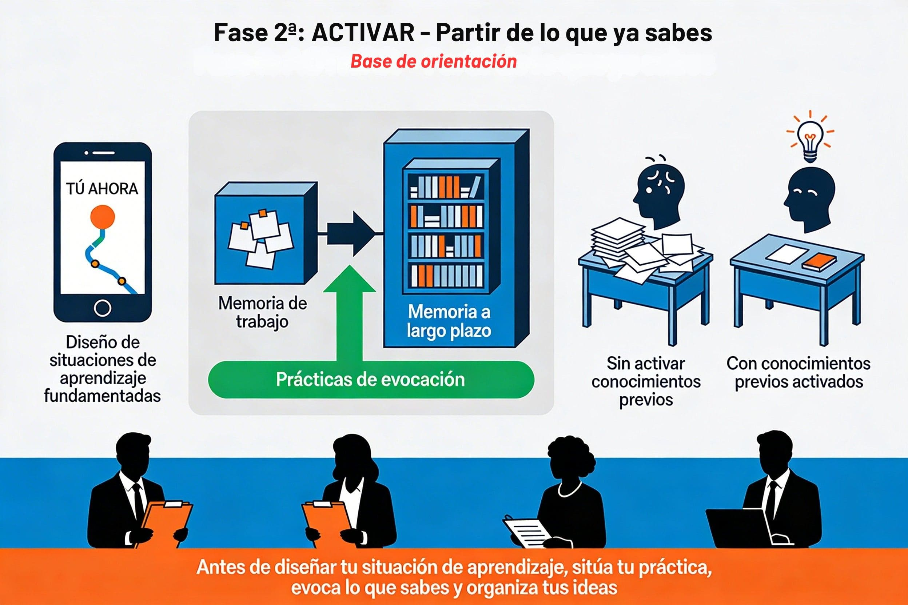

Recuperar saberes sobre diseño didáctico: lo que ya sabes (y quizás no sabías que sabías)
Objetivos de esta fase
Al finalizar esta fase, habréis:
- Evocado experiencias docentes reales (proyectos exitosos vs. fallidos) para identificar elementos de éxito en el diseño didáctico.
- Reconocido prácticas pedagógicas que ya aplicáis habitualmente sin haberlas formalizado teóricamente.
- Conectado esas prácticas intuitivas con conceptos fundamentados: andamiaje, evaluación formadora, metacognición, modelado, criterios explícitos, etc.
- Establecido un vocabulario pedagógico común para las dos sesiones formativas.
.jpg){kind=link}

¿Es posible navegar hacia un destino desconocido sin saber dónde te encuentras? Imposible, ¿verdad? Cualquier GPS necesita primero localizar tu posición actual para calcular la mejor ruta. Algo similar ocurre con el aprendizaje profesional docente: antes de construir nuevos conocimientos sobre diseño de experiencias de aprendizaje, necesitamos situarnos y reconocer desde dónde partimos; es decir, identificar y activar lo que ya sabemos, las experiencias que hemos acumulado y las intuiciones pedagógicas que hemos desarrollado a lo largo de nuestra trayectoria, aunque no siempre las hayamos sistematizado ni nombrado con precisión (Vid. Autobiografía metodológica).
Además, nuestra memoria no funciona como un simple almacén de datos. Distinguimos entre memoria de trabajo (Miller, 7+/- 2 elementos nuevos; tiempo 15-30 s), donde procesamos la información en el “aquí y ahora” con una capacidad muy limitada, y memoria a largo plazo, donde se consolidan los conocimientos duraderos que realmente integramos en nuestra práctica. Las prácticas de evocación —el acto deliberado de recuperar información que ya conocemos sin mirar apuntes ni materiales— son el puente entre ambas: cada vez que evocamos algo, reforzamos esa huella, la reorganizamos, la conectamos con nuevas ideas y la hacemos más resistente al olvido. Por eso la ciencia cognitiva considera la evocación un pilar del aprendizaje eficaz, no solo una forma de “comprobar” lo aprendido. Por cierto, una nota terminológica. “Memoria” en este contexto cognitivista no tiene el significado habitual de «facultad cerebral para retener y recordar hechos pasados», sino el de función cerebral que permite la codificación, almacenamiento y recuperación de información.
La teoría de la carga cognitiva (J. Sweller) añade una pieza clave a este cuadro: nuestra capacidad para procesar información nueva es limitada. Si intentamos aprender algo complejo —como diseñar situaciones de aprendizaje que integren andamiajes, evaluación formadora y criterios explícitos— sin antes activar y organizar lo que ya sabemos sobre esos conceptos, saturamos la memoria de trabajo y el aprendizaje se vuelve superficial y agotador. En cambio, cuando activamos estratégicamente nuestro conocimiento previo, liberamos espacio mental para integrar las nuevas ideas con mayor profundidad y eficacia: es como despejar el escritorio antes de comenzar un proyecto complejo para reducir interferencias y optimizar el trabajo cognitivo.
PRINCIPIO PEDAGÓGICO APLICADO: Activación de conocimientos previos
¿Por qué empezamos así? El aprendizaje significativo se refuerza cuando lo nuevo se ancla en lo ya conocido y cuando liberamos carga cognitiva en la memoria de trabajo. Cuando diseñéis vuestras situaciones de aprendizaje, dedicad siempre tiempo inicial a activar los conocimientos previos del alumnado antes de presentar información nueva: reducís la carga cognitiva y facilitáis la comprensión profunda.
¿Cómo lo transferís a vuestra práctica? Al inicio de cualquier unidad, proyecto o contenido nuevo, formulad preguntas, proponed actividades de evocación (como la que vais a hacer ahora), usad organizadores previos o bases de orientación. De este modo, vinculáis lo que ya saben con lo que van a aprender y optimizáis el esfuerzo cognitivo.
Desde la perspectiva de la evaluación formativa, esta fase responde a la primera de las cinco estrategias descritas por Dylan Wiliam: aclarar el destino del aprendizaje, saber dónde está el alumnado y decidir qué pasos son necesarios para avanzar. En nuestro caso, el “alumnado” sois vosotros mismos como docentes: antes de diseñar un esbozo de situación de aprendizaje completa, necesitamos evidencias de qué prácticas y concepciones manejáis ya.
PRINCIPIO PEDAGÓGICO APLICADO: Primera estrategia de evaluación formativa (Wiliam)
¿Por qué explicitar objetivos y criterios desde el inicio? Según Dylan Wiliam, la primera estrategia clave de la evaluación formativa es clarificar, compartir y comprender los objetivos de aprendizaje y los criterios de éxito. Cuando el alumnado sabe exactamente qué se espera de él y cómo se evaluará su trabajo, puede autorregular su proceso de aprendizaje de forma mucho más efectiva. Esta transparencia reduce la ansiedad, aumenta la motivación y permite que el estudiante tome decisiones informadas durante todo el proceso.
Al diseñar vuestra situación de aprendizaje, explicitad desde la primera sesión qué van a aprender, por qué es relevante y cómo se evaluará (criterios de realización y criterios de calidad). Proporcionad ejemplos, modelos anotados y rúbricas comprensibles. No guardéis “el secreto” de lo que esperáis: compartir los criterios no reduce el rigor, sino que orienta al alumnado para alcanzar los niveles más altos de logro.
Esta fase de ACTIVACIÓN tiene un doble propósito esencial:
- Hacer consciente lo inconsciente: identificar qué estrategias pedagógicas ya aplicáis habitualmente en vuestra práctica diaria, aunque no las hayáis nombrado con terminología pedagógica formal.
- Conectar práctica con teoría: vincular esas prácticas intuitivas con conceptos fundamentados (andamiaje, evaluación formadora, metacognición, modelado…) para que podáis sistematizarlas, transferirlas a otros contextos y explicarlas con rigor.
Los docentes experimentados desarrollamos un “conocimiento en acción” muy valioso que, sin embargo, permanece implícito y difícilmente transferible si no lo explicitamos mediante reflexión sistemática. Esta fase facilita precisamente esa práctica reflexiva: mirar conscientemente lo que hacéis, nombrarlo, comprenderlo y refinarlo. Después de años en el aula, aplicáis intuitivamente estrategias pedagógicas efectivas sin ser siempre conscientes de su fundamento teórico ni de su nombre técnico. Proporcionáis ejemplos a vuestro alumnado antes de pedirles que produzcan, desdobláis tareas complejas en pasos más pequeños, ofrecéis guías de verificación, dais feedback durante el proceso… Todo eso tiene nombre y fundamento en la investigación educativa, pero no siempre lo hemos explicitado ni organizado de forma sistemática.
Por eso, antes de diseñar un esbozo de vuestra situación de aprendizaje (el reto de estas dos sesiones), dedicaremos este momento a recordar y reorganizar conceptos fundamentales sobre conceptos pedagógicos que ya conocéis —aunque quizá no con esta terminología— y a reconocer cómo se manifiestan en vuestra práctica cotidiana:
- Aprendizaje basado en proyectos (ABP) y aprendizaje funcional: diseñar experiencias ancladas en situaciones auténticas que conecten con la vida real del alumnado.
- Andamiaje educativo y zona de desarrollo próximo (ZDP): proporcionar apoyos temporales ajustados al nivel del aprendiz para facilitar su autonomía progresiva.
- Metacognición y autorregulación del aprendizaje: desarrollar en el alumnado la capacidad de planificar, monitorizar y evaluar su propio proceso de aprendizaje.
- Evaluación formativa y formadora: diferenciar entre la evaluación que orienta (formativa: el profesor ajusta) y la que empodera (formadora: el alumno autorregula).
- Criterios explícitos y feedback efectivo: compartir desde el inicio qué se espera, cómo se evaluará y proporcionar retroalimentación específica y procesable.
Las actividades interactivas de esta fase tienen una triple finalidad:
- Diagnóstico inicial: identificar qué conceptos pedagógicos domináis ya y dónde necesitáis reforzar o precisar vuestro conocimiento.
- Activación estratégica: traer a vuestra memoria de trabajo los saberes previos que necesitaréis en las siguientes fases para diseñar vuestra situación de aprendizaje.
- Conexión teoría-práctica: vincular vuestra experiencia docente real (lo que ya hacéis intuitivamente) con marcos teóricos fundamentados (cómo se llama y por qué funciona).
Se trata, en definitiva, de hacer un mapa de tu punto de partida, pero no para evaluarte, sino para orientarte. Cuando identifiques áreas donde tus respuestas son menos seguras, tómalo como una señal para prestar especial atención a esos conceptos en las siguientes fases. Esto no es un examen, sino una brújula pedagógica que te ayudará a navegar conscientemente por el diseño de tu situación de aprendizaje.
{kind=link}
{kind=link}
{kind=link}